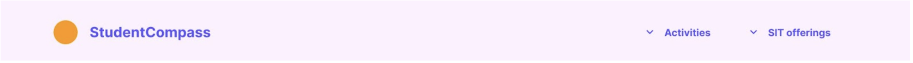
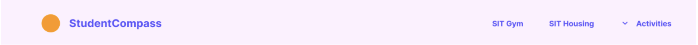

We tested our users by giving them a set of tasks to do on the website to test out how smoothly the navigation is and the overall user experience. The following tasks were:
The test subjects were all a part of our target group which were students.
The navbar needs to provide the user with more information. A solution can be to add more options or change the names of the different tabs to make it more clear.
To make the navbar more intuitive, we can remove the drop-down meny “SIT offerings” and make them individual elements in the navbar.
Current navn bar:
Suggested nav bar:
